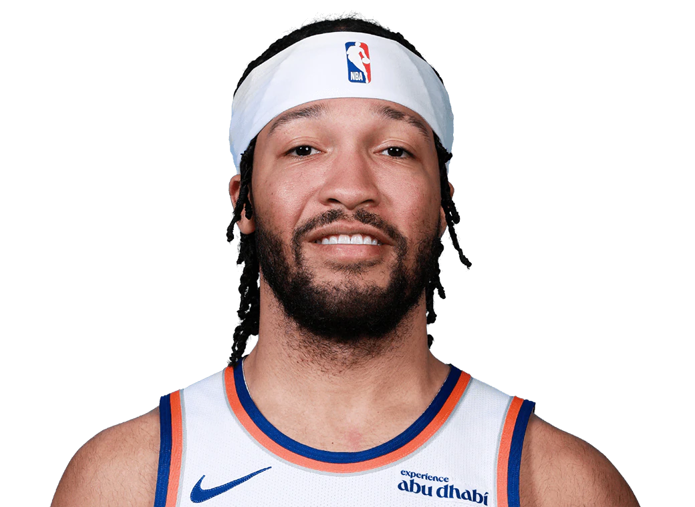

- Jalen Brunson 
- OG Anunoby
- Karl Anthony-Towns
- Mitchell Robinson
- Josh Hart
- Mikal Bridges
- Miles McBride
Jalen Marquis Brunson (born August 31, 1996) was drafted with the 33rd overall selection of the 2018 NBA Draft by the Dallas Mavericks and played his first four seasons with them. He won two NCAA titles at Villanova.
Stats (24–25): 65 GP, 35.4 Min, 26.0 Pts, 48.8 FG%, 38.3 3pt%, 2.9 Reb, 7.3 Ast, 0.9 Stl

Ogugua "OG" Anunoby Jr. (born July 17, 1997) played college ball at Indiana and won an NBA championship with Toronto in 2019. He led the league in steals in 2023.
Stats (24–25): 74 GP, 36.6 Min, 18.0 Pts, 47.6 FG%, 37.2 3pt%, 4.8 Reb, 2.2 Ast, 1.5 Stl

Karl-Anthony Towns Jr. (born November 15, 1995) is a Dominican-American center traded to the Knicks in 2025. A former No. 1 pick, he played for Minnesota and Kentucky.
Stats (24–25): 72 GP, 35.0 Min, 24.4 Pts, 52.6 FG%, 42.0 3pt%, 12.8 Reb, 3.1 Ast, 1.0 Stl

Mitchell Robinson III (born April 1, 1998) made history by skipping college games to train alone. Drafted 36th overall in 2018.
Stats (24–25): 17 GP, 17.1 Min, 5.1 Pts, 66.1 FG%, 5.9 Reb, 0.8 Ast, 0.9 Stl, 1.1 Blk
Joshua Aaron Hart (born March 6, 1995) holds the Knicks record for most triple-doubles in a season. He won an NCAA title with Villanova in 2016.
Stats (24–25): 77 GP, 37.6 Min, 13.6 Pts, 52.5 FG%, 33.3 3pt%, 9.6 Reb, 5.9 Ast, 1.5 Stl

Mikal Bridges (born August 30, 1996) has never missed an NBA game since being drafted. He won 2 NCAA titles at Villanova and is nicknamed "The Warden".
Stats (24–25): 82 GP, 37.0 Min, 17.6 Pts, 50.0 FG%, 35.4 3pt%, 3.2 Reb, 3.7 Ast, 0.9 Stl

Miles "Deuce" McBride (born September 8, 2000) was drafted by OKC but traded to the Knicks on draft night. He played for West Virginia.
Stats (24–25): 64 GP, 24.9 Min, 9.5 Pts, 40.6 FG%, 36.9 3pt%, 2.5 Reb, 2.9 Ast, 1.0 Stl